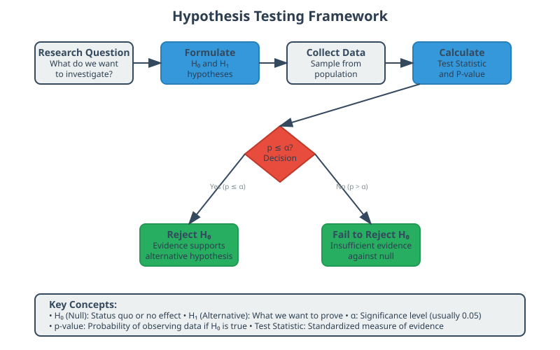
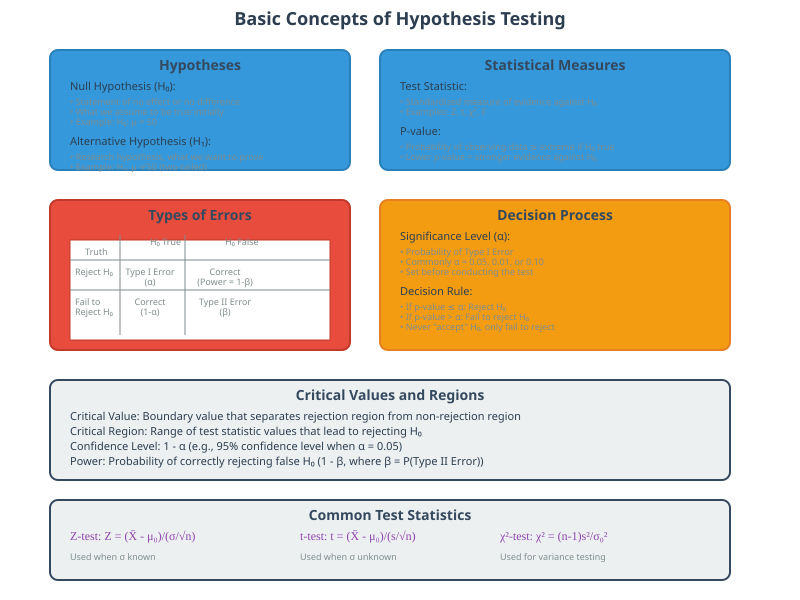
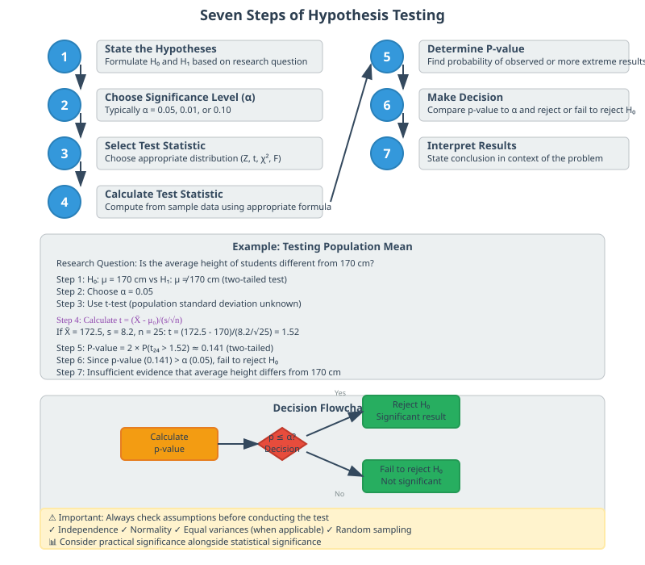
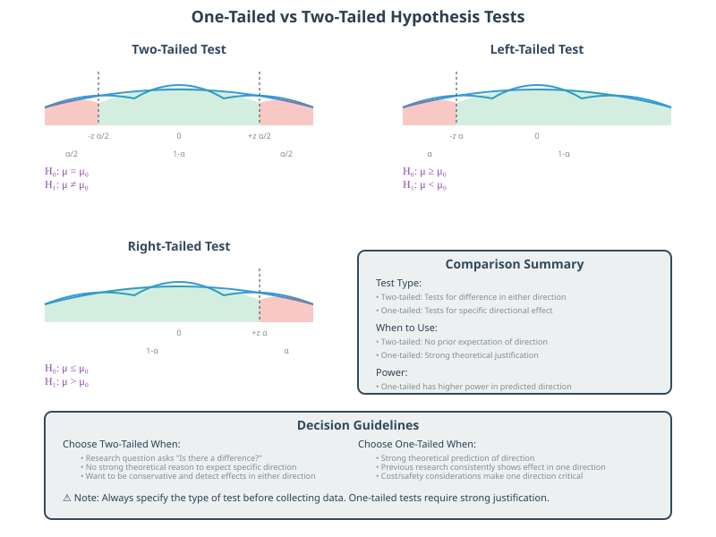
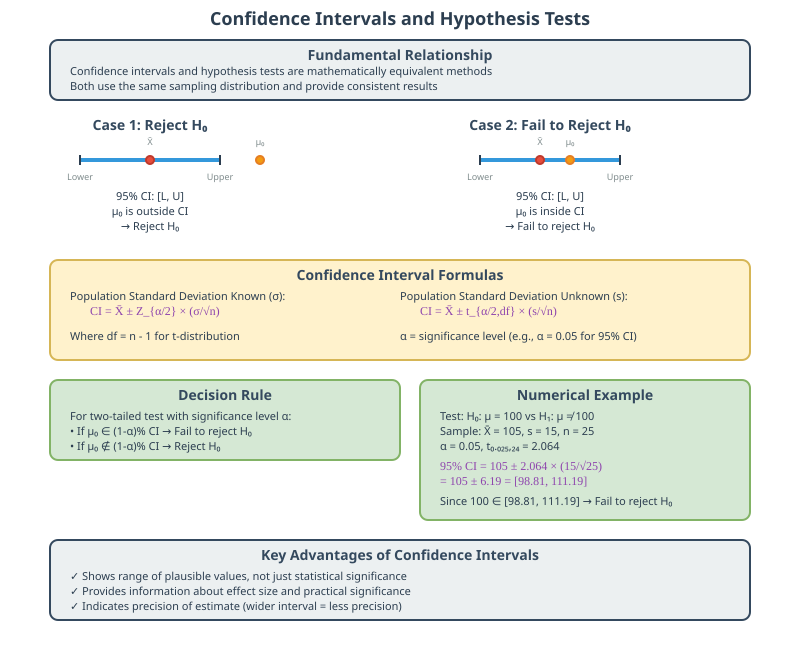
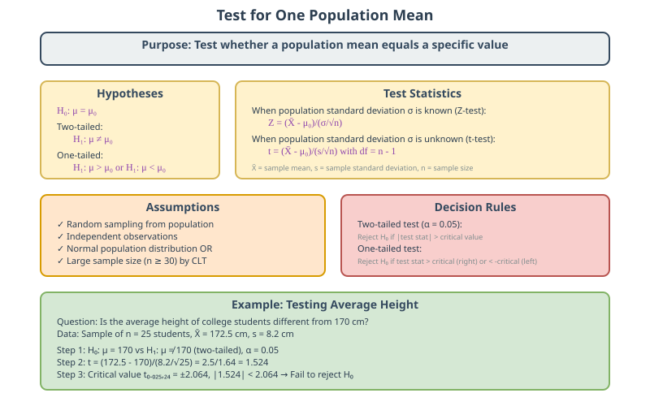
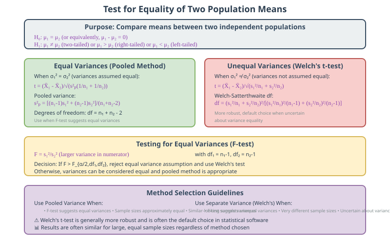
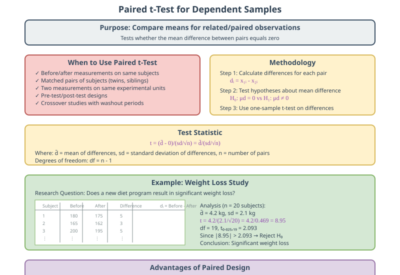
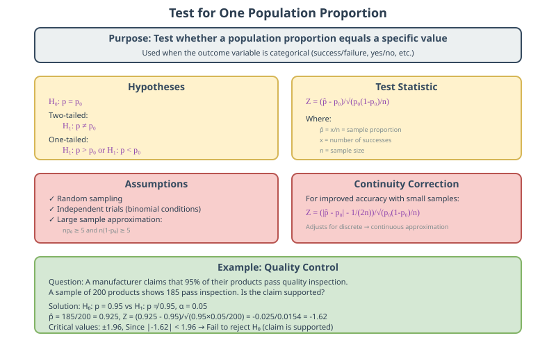
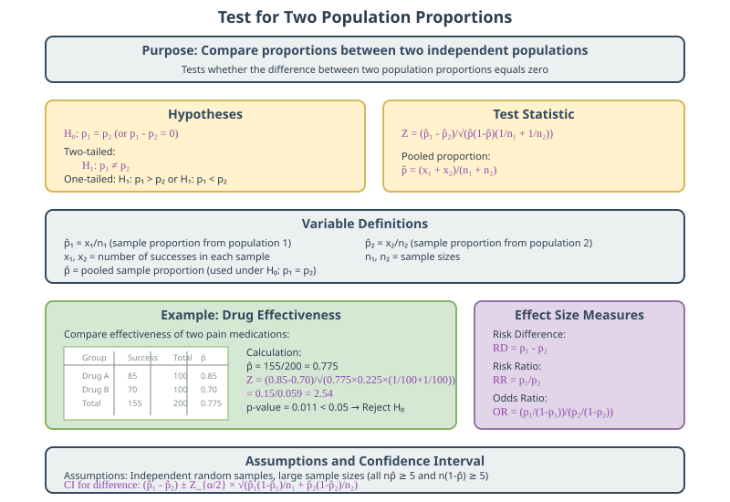

Hypothesis Testing: Complete Statistical Guide
Quick Navigation
- Introduction to Hypothesis Testing
- Basic Concepts of Hypothesis Testing
- Performing a Hypothesis Test
- One-Tailed and Two-Tailed Tests
- Confidence Intervals and Hypothesis Tests
- Important Statistical Tests
- Test for One Mean
- Test for Equality of Means
- Test for Equality of Means - Equal Standard Deviation
- Test for Equality of Means - Unequal Standard Deviation
- Paired Test for Equality of Means
- Test for One Proportion
- Test for Two Proportions
- Test for One Variance
- Test for Equality of Variances
- Test of Independence
- ANOVA Test
- References & Further Reading
Introduction to Hypothesis Testing

Hypothesis testing is a fundamental statistical method used to make decisions about population parameters based on sample data. It provides a systematic approach to determine whether observed differences in data are statistically significant or merely due to random variation.
Core Purpose:
- Decision Making: Determine whether to accept or reject claims about populations
- Scientific Method: Test theories and validate research hypotheses
- Quality Control: Monitor processes and detect significant changes
- Evidence-Based Conclusions: Make objective decisions using probability theory
Key Applications:
- Medical Research: Testing drug effectiveness and treatment outcomes
- Business Analytics: A/B testing for marketing campaigns and product features
- Manufacturing: Quality control and process improvement
- Social Sciences: Validating theories about human behavior and social phenomena
Statistical Foundation:
Hypothesis testing relies on the principle that we can never prove a hypothesis true with absolute certainty, but we can assess the probability that our observations occurred by chance alone.
Basic Concepts of Hypothesis Testing

Fundamental Components:
- Null Hypothesis (H₀): The statement being tested, typically representing "no effect" or "no difference"
- Alternative Hypothesis (H₁ or Hₐ): The statement we want to prove, representing the research hypothesis
- Test Statistic: A standardized value calculated from sample data
- P-value: The probability of observing the test statistic or more extreme values, assuming H₀ is true
- Significance Level (α): The threshold for rejecting H₀, commonly set at 0.05
- Critical Region: The range of test statistic values that lead to rejecting H₀
Types of Errors:
- Type I Error (α): Rejecting H₀ when it's actually true (false positive)
- Type II Error (β): Failing to reject H₀ when it's actually false (false negative)
- Power (1-β): The probability of correctly rejecting a false H₀
Decision Rules:
If p-value ≤ α: Reject H₀ (statistically significant)
If p-value > α: Fail to reject H₀ (not statistically significant)
Common Significance Levels:
- α = 0.05: Standard level for most research (5% chance of Type I error)
- α = 0.01: More stringent level for critical applications (1% chance of Type I error)
- α = 0.10: Less stringent level for exploratory research (10% chance of Type I error)
Performing a Hypothesis Test

Step-by-Step Process:
Step 1: State the Hypotheses
- Null Hypothesis (H₀): Formulate the statement to be tested
- Alternative Hypothesis (H₁): Specify the research hypothesis
- Example: H₀: μ = 50 vs H₁: μ ≠ 50
Step 2: Choose Significance Level
- Select α: Commonly α = 0.05
- Consider consequences: Balance Type I and Type II error risks
- Document choice: Specify α before collecting data
Step 3: Select Test Statistic
- Identify distribution: Normal, t, chi-square, F, etc.
- Check assumptions: Independence, normality, equal variances
- Calculate degrees of freedom: If applicable
Step 4: Calculate Test Statistic
Common formulas:
Z = (X̄ - μ₀)/(σ/√n) [Known population standard deviation]
t = (X̄ - μ₀)/(s/√n) [Unknown population standard deviation]
Step 5: Determine P-value
- Two-tailed test: P = 2 × P(|test statistic| ≥ |observed value|)
- One-tailed test: P = P(test statistic ≥ observed value) or P(test statistic ≤ observed value)
Step 6: Make Decision
- Compare p-value to α
- State conclusion in context
- Discuss practical significance
Step 7: Interpret Results
- Statistical vs. Practical Significance
- Confidence in conclusions
- Limitations and assumptions
One-Tailed and Two-Tailed Tests

Two-Tailed Tests:
When to Use:
- Research question asks about difference in either direction
- No prior expectation about direction of effect
- Most conservative approach
Hypothesis Structure:
H₀: μ = μ₀
H₁: μ ≠ μ₀
Critical Region:
- Split α equally between both tails
- Reject H₀ if test statistic falls in either tail
- Example: For α = 0.05, use ±1.96 for Z-test
One-Tailed Tests:
When to Use:
- Strong theoretical reason to expect direction
- Cost or safety considerations make one direction more important
- Prior research suggests specific direction
Left-Tailed Test:
H₀: μ ≥ μ₀
H₁: μ < μ₀
Right-Tailed Test:
H₀: μ ≤ μ₀
H₁: μ > μ₀
Advantages and Disadvantages:
Two-Tailed Tests:
- Advantages: More conservative, detects effects in either direction
- Disadvantages: Lower power for detecting effects in predicted direction
One-Tailed Tests:
- Advantages: Higher power for detecting effects in predicted direction
- Disadvantages: Cannot detect effects in opposite direction, requires strong justification
Choosing Between Tests:
- Default to two-tailed unless strong justification exists
- Consider research context and practical implications
- Be consistent with research literature in your field
Confidence Intervals and Hypothesis Tests

Relationship Between Confidence Intervals and Hypothesis Tests:
Fundamental Connection:
- Confidence intervals and hypothesis tests are mathematically equivalent
- Both use the same underlying sampling distribution
- Results should be consistent between methods
Decision Rule Using Confidence Intervals:
For two-tailed test with significance level α:
- If μ₀ is inside (1-α)% confidence interval: Fail to reject H₀
- If μ₀ is outside (1-α)% confidence interval: Reject H₀
Confidence Interval Construction:
For Population Mean (σ known):
CI = X̄ ± Z_(α/2) × (σ/√n)
For Population Mean (σ unknown):
CI = X̄ ± t_(α/2,df) × (s/√n)
Where:
- X̄: Sample mean
- Z_(α/2): Critical Z-value for desired confidence level
- t_(α/2,df): Critical t-value with df = n-1 degrees of freedom
- σ: Population standard deviation
- s: Sample standard deviation
- n: Sample size
Interpretation Guidelines:
Confidence Level Interpretation:
- 95% CI: If we repeated sampling many times, 95% of intervals would contain the true parameter
- Not about probability: The interval either contains the parameter or it doesn't
- About the method: The confidence is in the interval construction method
Practical Advantages of Confidence Intervals:
- Range of plausible values: Shows practical significance, not just statistical significance
- Effect size information: Indicates magnitude of difference
- Precision assessment: Wider intervals indicate less precision
Common Confidence Levels:
- 90% CI: Z = 1.645, less precise but narrower interval
- 95% CI: Z = 1.96, standard choice in most research
- 99% CI: Z = 2.576, more conservative, wider interval
Important Statistical Tests
Test for One Mean

Purpose: Test whether a population mean equals a specific value.
Hypotheses:
H₀: μ = μ₀
H₁: μ ≠ μ₀ (two-tailed)
H₁: μ > μ₀ (right-tailed)
H₁: μ < μ₀ (left-tailed)
Test Statistics:
When σ is known (Z-test):
Z = (X̄ - μ₀)/(σ/√n)
When σ is unknown (t-test):
t = (X̄ - μ₀)/(s/√n)
Assumptions:
- Random sampling from population
- Independent observations
- Normal population distribution or large sample size (n ≥ 30)
Decision Rules:
Z-test:
- Two-tailed: Reject H₀ if |Z| > Z_(α/2)
- Right-tailed: Reject H₀ if Z > Z_α
- Left-tailed: Reject H₀ if Z < -Z_α
t-test:
- Two-tailed: Reject H₀ if |t| > t_(α/2,n-1)
- Right-tailed: Reject H₀ if t > t_(α,n-1)
- Left-tailed: Reject H₀ if t < -t_(α,n-1)
Test for Equality of Means

Purpose: Compare means between two independent populations.
Hypotheses:
H₀: μ₁ = μ₂ or H₀: μ₁ - μ₂ = 0
H₁: μ₁ ≠ μ₂ (two-tailed)
H₁: μ₁ > μ₂ (right-tailed)
H₁: μ₁ < μ₂ (left-tailed)
Key Considerations:
- Independence: Samples must be independent
- Variance assumption: Equal vs. unequal population variances
- Sample sizes: Can be equal or unequal
General Approach:
Test Statistic Form:
t = (X̄₁ - X̄₂ - D₀)/SE(X̄₁ - X̄₂)
Where D₀ = 0 for testing equality
Assumptions:
- Random sampling from both populations
- Independent samples
- Normal populations or large sample sizes
- Homogeneity of variance (for pooled variance approach)
Test for Equality of Means - Equal Standard Deviation
When to Use: When population variances are assumed equal (σ₁² = σ₂²).
Pooled Variance Approach:
Test Statistic:
t = (X̄₁ - X̄₂)/√(s²ₚ(1/n₁ + 1/n₂))
Pooled Sample Variance:
s²ₚ = [(n₁-1)s₁² + (n₂-1)s₂²]/(n₁+n₂-2)
Degrees of Freedom:
df = n₁ + n₂ - 2
Standard Error:
SE = √(s²ₚ(1/n₁ + 1/n₂))
Testing Equal Variances:
F-test for variance equality:
F = s₁²/s₂² (larger variance in numerator)
Decision Rule:
- Reject equal variance assumption if F > F_(α/2,df₁,df₂)
- Use pooled variance method if variances are equal
Advantages:
- Higher power when variance assumption is met
- Simpler calculation
- More precise standard error estimate
Test for Equality of Means - Unequal Standard Deviation
When to Use: When population variances are not assumed equal (σ₁² ≠ σ₂²).
Welch's t-test (Separate Variance Approach):
Test Statistic:
t = (X̄₁ - X̄₂)/√(s₁²/n₁ + s₂²/n₂)
Degrees of Freedom (Welch-Satterthwaite):
df = (s₁²/n₁ + s₂²/n₂)²/[(s₁²/n₁)²/(n₁-1) + (s₂²/n₂)²/(n₂-1)]
Standard Error:
SE = √(s₁²/n₁ + s₂²/n₂)
When to Use Each Method:
Use Pooled Variance When:
- F-test suggests equal variances
- Sample sizes are approximately equal
- Variances appear similar
Use Separate Variance When:
- F-test suggests unequal variances
- Sample sizes are very different
- Uncertain about variance equality
Practical Guidelines:
- Welch's t-test is generally more robust
- Default to separate variance approach when in doubt
- Results often similar for large, equal sample sizes
Paired Test for Equality of Means

Purpose: Compare means for related/paired observations.
When to Use:
- Before/after measurements on same subjects
- Matched pairs of subjects
- Two measurements on same experimental units
Methodology:
Calculate Differences:
dᵢ = x₁ᵢ - x₂ᵢ for each pair i
Hypotheses:
H₀: μd = 0 (no mean difference)
H₁: μd ≠ 0 (two-tailed)
H₁: μd > 0 (right-tailed)
H₁: μd < 0 (left-tailed)
Test Statistic:
t = (d̄ - 0)/(sd/√n)
Where:
- d̄: Mean of differences
- sd: Standard deviation of differences
- n: Number of pairs
Degrees of Freedom:
df = n - 1
Assumptions:
- Differences are normally distributed
- Pairs are independent
- Random sampling
Advantages:
- Controls for individual variation
- More powerful than independent samples test
- Reduces confounding variables
Test for One Proportion

Purpose: Test whether a population proportion equals a specific value.
Hypotheses:
H₀: p = p₀
H₁: p ≠ p₀ (two-tailed)
H₁: p > p₀ (right-tailed)
H₁: p < p₀ (left-tailed)
Test Statistic:
Z = (p̂ - p₀)/√(p₀(1-p₀)/n)
Where:
- p̂ = x/n: Sample proportion
- x: Number of successes
- n: Sample size
- p₀: Hypothesized proportion
Assumptions:
- Random sampling
- Independent trials
- Large sample approximation: np₀ ≥ 5 and n(1-p₀) ≥ 5
Continuity Correction:
For improved accuracy with small samples:
Z = (|p̂ - p₀| - 1/(2n))/√(p₀(1-p₀)/n)
Confidence Interval for Proportion:
p̂ ± Z_(α/2) × √(p̂(1-p̂)/n)
Sample Size Determination:
n = (Z_(α/2))² × p₀(1-p₀)/E²
Where E is the desired margin of error
Test for Two Proportions

Purpose: Compare proportions between two independent populations.
Hypotheses:
H₀: p₁ = p₂ or H₀: p₁ - p₂ = 0
H₁: p₁ ≠ p₂ (two-tailed)
H₁: p₁ > p₂ (right-tailed)
H₁: p₁ < p₂ (left-tailed)
Test Statistic:
Z = (p̂₁ - p̂₂)/√(p̂(1-p̂)(1/n₁ + 1/n₂))
Pooled Proportion:
p̂ = (x₁ + x₂)/(n₁ + n₂)
Where:
- p̂₁ = x₁/n₁: Sample proportion from population 1
- p̂₂ = x₂/n₂: Sample proportion from population 2
- x₁, x₂: Number of successes in each sample
- n₁, n₂: Sample sizes
Assumptions:
- Independent random samples
- Large sample sizes: n₁p̂₁ ≥ 5, n₁(1-p̂₁) ≥ 5, n₂p̂₂ ≥ 5, n₂(1-p̂₂) ≥ 5
Confidence Interval for Difference:
(p̂₁ - p̂₂) ± Z_(α/2) × √(p̂₁(1-p̂₁)/n₁ + p̂₂(1-p̂₂)/n₂)
Effect Size Measures:
- Risk Difference: p₁ - p₂
- Risk Ratio: p₁/p₂
- Odds Ratio: (p₁/(1-p₁))/(p₂/(1-p₂))
Test for One Variance

Purpose: Test whether a population variance equals a specific value.
Hypotheses:
H₀: σ² = σ₀²
H₁: σ² ≠ σ₀² (two-tailed)
H₁: σ² > σ₀² (right-tailed)
H₁: σ² < σ₀² (left-tailed)
Test Statistic:
χ² = (n-1)s²/σ₀²
Where:
- s²: Sample variance
- σ₀²: Hypothesized population variance
- n: Sample size
Degrees of Freedom:
df = n - 1
Decision Rules:
Two-tailed test:
- Reject H₀ if χ² < χ²_(1-α/2,n-1) or χ² > χ²_(α/2,n-1)
Right-tailed test:
- Reject H₀ if χ² > χ²_(α,n-1)
Left-tailed test:
- Reject H₀ if χ² < χ²_(1-α,n-1)
Assumptions:
- Random sampling
- Normal population distribution
- Independent observations
Confidence Interval for Variance:
[(n-1)s²/χ²_(α/2,n-1), (n-1)s²/χ²_(1-α/2,n-1)]
Important Notes:
- Chi-square test is sensitive to normality assumption
- Consider non-parametric alternatives for non-normal data
- Levene's test is more robust for variance testing
Test for Equality of Variances

Purpose: Compare variances between two populations.
F-Test for Equal Variances:
Hypotheses:
H₀: σ₁² = σ₂²
H₁: σ₁² ≠ σ₂² (two-tailed)
H₁: σ₁² > σ₂² (right-tailed)
H₁: σ₁² < σ₂² (left-tailed)
Test Statistic:
F = s₁²/s₂² (larger variance in numerator for two-tailed)
Degrees of Freedom:
df₁ = n₁ - 1 (numerator)
df₂ = n₂ - 1 (denominator)
Decision Rules:
Two-tailed test:
- Reject H₀ if F > F_(α/2,df₁,df₂)
Right-tailed test:
- Reject H₀ if F > F_(α,df₁,df₂)
Levene's Test (More Robust):
When to Use:
- Data may not be normally distributed
- More robust alternative to F-test
- Can handle more than two groups
Test Statistic:
W = [(N-k)∑nᵢ(Z̄ᵢ - Z̄)²]/[(k-1)∑∑(Zᵢⱼ - Z̄ᵢ)²]
Where Zᵢⱼ = |Xᵢⱼ - X̄ᵢ| (absolute deviations from group means)
Assumptions:
F-test:
- Normal populations
- Independent random samples
Levene's test:
- Independent random samples
- Less sensitive to normality
Test of Independence

Purpose: Test whether two categorical variables are independent.
Chi-Square Test of Independence:
Hypotheses:
H₀: Variables are independent
H₁: Variables are not independent (associated)
Test Statistic:
χ² = ∑∑(Oᵢⱼ - Eᵢⱼ)²/Eᵢⱼ
Expected Frequencies:
Eᵢⱼ = (Row Total × Column Total)/Grand Total
Degrees of Freedom:
df = (r-1)(c-1)
Where:
- r: Number of rows
- c: Number of columns
- Oᵢⱼ: Observed frequency in cell (i,j)
- Eᵢⱼ: Expected frequency in cell (i,j)
Assumptions:
- Random sampling
- Independent observations
- All expected frequencies ≥ 5 (or at least 80% ≥ 5 and none < 1)
Contingency Table Example:
| Variable A | Category 1 | Category 2 | Row Total |
|---|---|---|---|
| Group 1 | O₁₁ | O₁₂ | R₁ |
| Group 2 | O₂₁ | O₂₂ | R₂ |
| Col Total | C₁ | C₂ | N |
Effect Size Measures:
Cramér's V:
V = √(χ²/(N × min(r-1, c-1)))
Phi Coefficient (for 2×2 tables):
φ = √(χ²/N)
Post-hoc Analysis:
- Standardized residuals for significant cells
- Multiple comparison procedures
- Partition chi-square for complex tables
ANOVA Test

Purpose: Compare means among three or more groups simultaneously.
One-Way ANOVA:
Hypotheses:
H₀: μ₁ = μ₂ = μ₃ = ... = μₖ (all means equal)
H₁: At least one mean is different
ANOVA Table:
| Source | df | SS | MS | F |
|---|---|---|---|---|
| Between | k-1 | SSB | MSB | MSB/MSW |
| Within | N-k | SSW | MSW | |
| Total | N-1 | SST |
Test Statistic:
F = MSB/MSW = [SSB/(k-1)]/[SSW/(N-k)]
Sum of Squares:
Total Sum of Squares:
SST = ∑∑(Xᵢⱼ - X̄)²
Between Groups Sum of Squares:
SSB = ∑nᵢ(X̄ᵢ - X̄)²
Within Groups Sum of Squares:
SSW = ∑∑(Xᵢⱼ - X̄ᵢ)²
Assumptions:
- Independence: Observations within and between groups are independent
- Normality: Each group follows normal distribution
- Homogeneity of Variance: Equal variances across groups (σ₁² = σ₂² = ... = σₖ²)
Post-hoc Tests (when F is significant):
Conservative Tests:
- Bonferroni: Controls family-wise error rate strictly
- Scheffe: Most conservative, good for complex contrasts
Moderate Tests:
- Tukey HSD: Balances Type I and Type II errors
- Duncan: Less conservative than Tukey
Effect Size:
Eta-squared (η²):
η² = SSB/SST
Omega-squared (ω²):
ω² = (SSB - (k-1)MSW)/(SST + MSW)
Two-Way ANOVA (Brief Overview):
Tests three hypotheses:
- Main effect of Factor A
- Main effect of Factor B
- Interaction effect (A × B)
Model:
Xᵢⱼₖ = μ + αᵢ + βⱼ + (αβ)ᵢⱼ + εᵢⱼₖ
References & Further Reading
📚 Foundational Textbooks:
- Montgomery, D. C., & Runger, G. C. (2018). Applied Statistics and Probability for Engineers (7th ed.). Wiley.
- Devore, J. L. (2019). Probability and Statistics for Engineering and the Sciences (9th ed.). Cengage Learning.
- Wackerly, D., Mendenhall, W., & Scheaffer, R. L. (2014). Mathematical Statistics with Applications (7th ed.). Cengage Learning.
🔬 Advanced Statistical Methods:
- Casella, G., & Berger, R. L. (2021). Statistical Inference (3rd ed.). Cengage Learning.
- Hogg, R. V., McKean, J. W., & Craig, A. T. (2019). Introduction to Mathematical Statistics (8th ed.). Pearson.
💻 Computational Statistics:
- James, G., Witten, D., Hastie, T., & Tibshirani, R. (2021). An Introduction to Statistical Learning with Applications in R (2nd ed.). Springer.
- Wickham, H., & Grolemund, G. (2017). R for Data Science. O'Reilly Media.
🧮 Online Resources:
- Khan Academy Statistics: Comprehensive video tutorials on hypothesis testing fundamentals
- Coursera - Statistical Inference: Johns Hopkins University course on inferential statistics
- MIT OpenCourseWare: 18.05 Introduction to Probability and Statistics lectures
- StatQuest YouTube Channel: Intuitive explanations of statistical concepts with visual demonstrations
📊 Interactive Learning:

💡 Practice Problems:
This documentation is designed for immediate deployment with MkDocs Material theme. All mathematical notation, diagrams, and formatting follow professional statistical documentation standards.